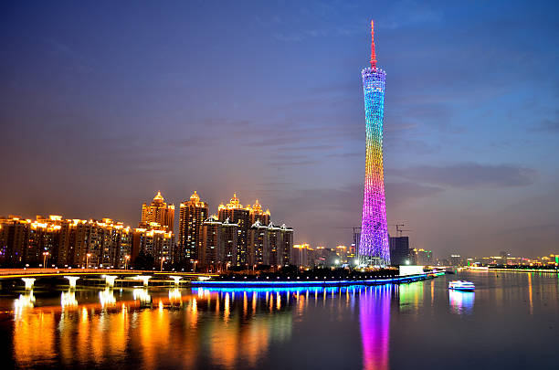
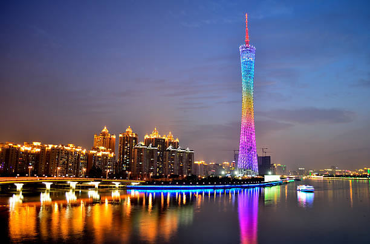

Guangzhou, China
 

Geographical Location: Asia
Guangzhou is the capital and largest city of Guangdong province in southern China. Located on the Pearl River about 120 km (75 mi) north-northwest of Hong Kong and 145 km (90 mi) north of Macau, Guangzhou has a history of over 2,200 years and was a major terminus of the maritime Silk Roa it continues to serve as a major port and transportation hub as well as being one of China's three largest cities.
Guangzhou is celebrated for its many handicraft products, including ivory carvings, jade objects, embroideries, fans, porcelain, and paper umbrellas. These, along with the citys famous cuisine and its many museums and other cultural attractions, have made Guangzhou one of China's principal tourist destinations.
Photo Gallery


San Francisco


Geographical Location: North America
San Francisco is a great location to visit with many landmarks, including the Golden Gate Bridge and Alcatraz. Located in Northern California, San Francisco is one of the most populated cities in California with a population of 815,000. The city is also a center of culture and industry. San Francisco is home to a thriving tech industry.
San Francisco has many trails and parks where you can hike or enjoy a walk. The Presidio is a large park with hiking trails and paths surrounding the Golden Gate Bridge area. One can see picturesque views of the bay and its wildlife.
Photo Gallery


Shanghai, China


Geographical Location: Asia
Shanghai, a vibrant metropolis, is nestled along the eastern coast of China. With a population of over 26 million, it ranks as one of the world's most populous cities and serves as a global financial hub. The cityscape of Shanghai is an exquisite blend of history and modernity, where towering skyscrapers such as the iconic Oriental Pearl Tower and the Shanghai Tower punctuate the skyline alongside historical landmarks like the Bund, a waterfront promenade that showcases colonial-era architecture.
The city has an unparalleled shopping scene that caters to all tastes, from luxury brands in shiny malls to hidden gems in busy markets. Moreover, Shanghai's culinary landscape is a testament to its multiculturalism, offering a symphony of flavors that range from traditional street food like xiaolongbao (soup dumplings) to avant-garde dining experiences.
Photo Gallery


Yellowstone


Geographical Location: North America
Yellowstone is the first national park in the United States. It covers over 2.2 million acres, and provides an opportunity to see wildlife and explore geothermal areas. In fact, Yellowstone contains about half the world's active geysers.
These unique opportunities also bring out a lot of bad decisions among the tourists. Every year visitors injure themselves or the wildlife by getting close to the animals. You can see examples of people making bad decisions by visiting Yellowstone National Park: Invasion of the Idiots, Tourons of Yellowstone, or Cowboy State Daily.
Photo Gallery